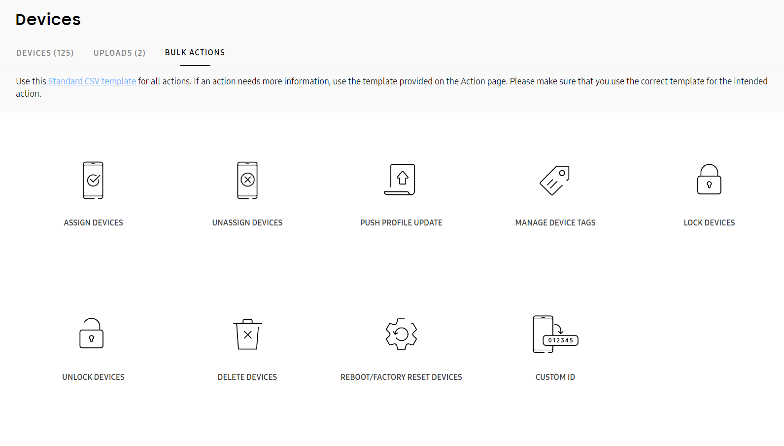
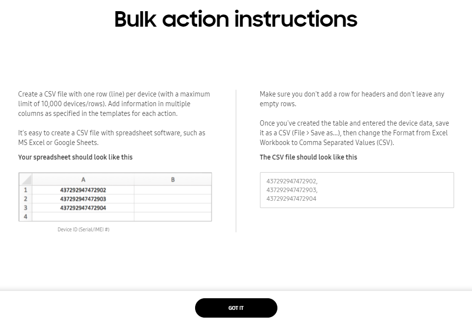
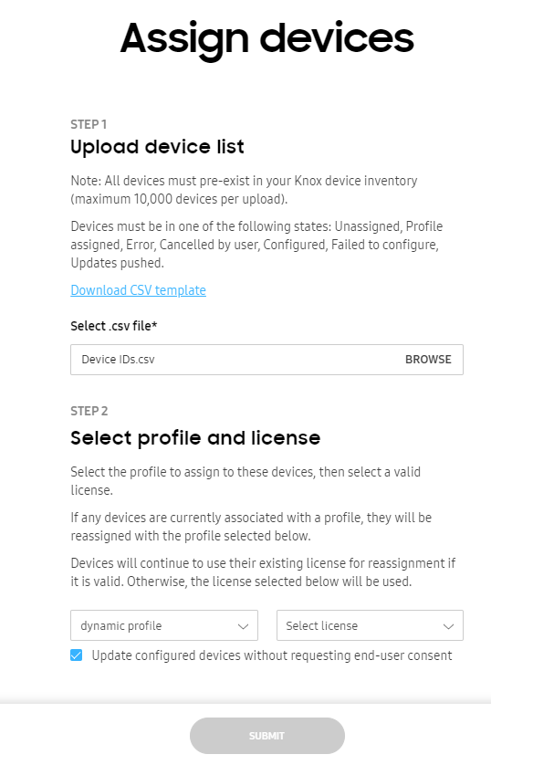
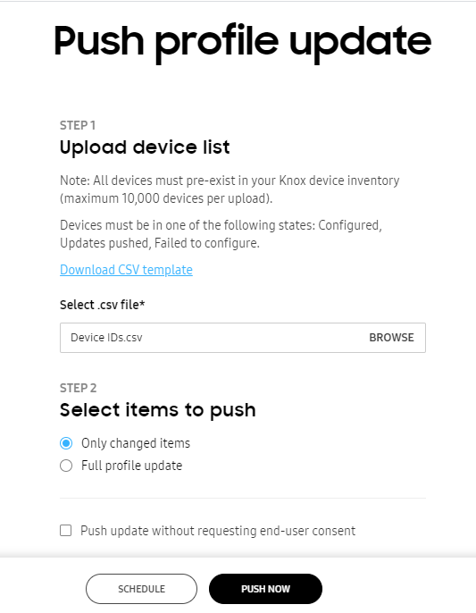
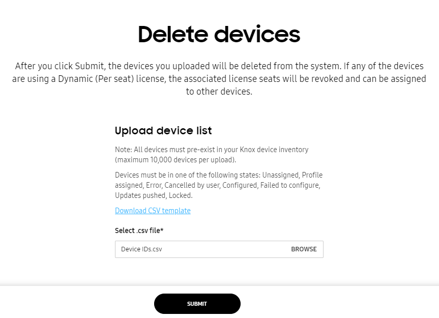
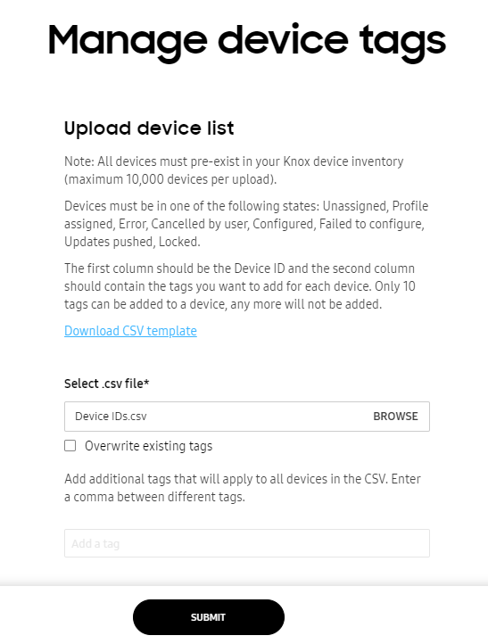
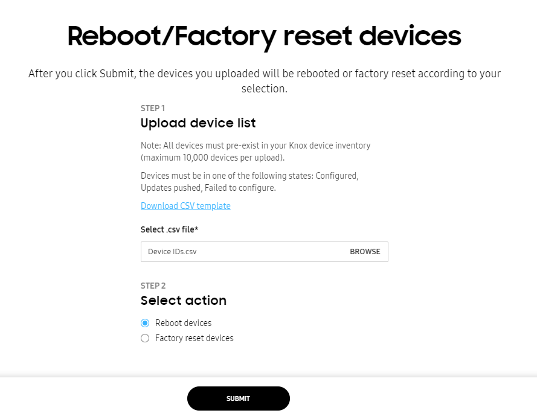
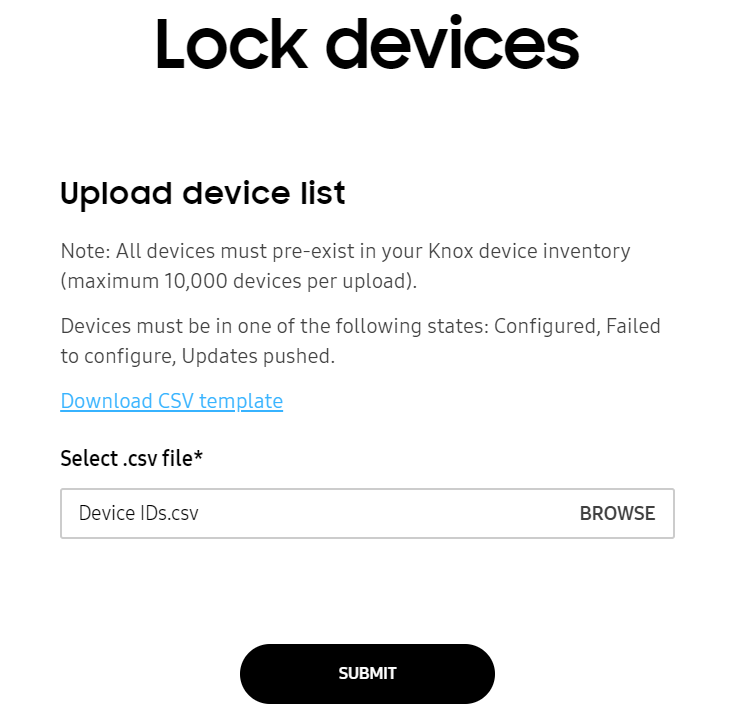
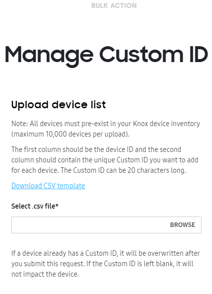

Bulk device operations
Last updated August 5th, 2025
A properly formatted CSV file can be used to configure numerous devices in one bulk configuration operation. Bulk configuration operations options include assigning and un-assigning devices, pushing profile updates, managing device tags, locking and unlocking devices, deleting devices, rebooting and factory resetting devices, and assigning custom IDs.
To bulk configure devices, click BULK ACTIONS on the Devices page.

If you need instructions on how to prepare a CSV file for any bulk device operation, select one of the options displayed within the Bulk actions screen and click the Instructions for all bulk actions link displayed on the lower left-hand side, of the screen.

Follow the directions on both the left and right side of the screen for preparing a CSV file with one device ID per row, then upload the CSV file to the portal. Do not include any empty rows within the CSV file as instructed. Click GOT IT to return to the bulk action screen.
Assign or un-assign devices in bulk
When necessary, administrators can lock or unlock up to 10,000 devices in a single CSV bulk lock operation. Available devices display within the Devices screen > DEVICES tab. Unassigned devices available for profile assignment are designated as Unassigned within the STATUS column. To list all devices, regardless of their state, refer to the CLEAR FILTER option at the bottom of the STATUS column drop-down menu.
For more information on assigning or un-assigning devices and their required device states, see Assign and deploy a profile to a device.
To assign or un-assign devices in bulk:
-
Select BULK ACTIONS from the bottom of the left-hand navigation menu.
-
Select either ASSIGN DEVICES or UNASSIGN DEVICES depending on your organization’s device assignment requirements.

-
Browse for a properly formatted CSV file containing the existing device IDs you intend to assign or un-assign. If needed, select the Download CSV template link to utilize an existing template for easier creation and submission of the CSV file.
-
If assigning devices, select both the profile and license the assigned devices will use with Knox Configure. Optionally, select Update configured devices without requesting end-user consent to assign devices without device user permission. By using this option, the user can still keep using their device while the IT admin makes the change or update. Once the update is made, IT admins can also check the status of the update without having to configure the user interface.
-
Select SUBMIT to upload the file to the console. The change of the device state can be verified within the Devices screen by selecting the DEVICES tab and checking the STATUS column. The STATUS column can be filtered as needed.
Push profile updates in bulk
Admins can bulk update up to 10,000 device configuration profiles using a properly formatted CSV file and significant save time when devices require the same profile update.
For information on pushing individual device updates, see Assign and deploy a profile to a device.
To push device profile updates in bulk:
-
Select BULK ACTIONS from the bottom of the left-hand navigation menu.
-
PUSH PROFILE UPDATE.

-
Browse for a properly formatted CSV file containing the IDs of the devices whose profile you intend to update. If needed, select the Download CSV template link to utilize an existing template for easier creation and submission of the CSV file.
-
Within the Select items to push field, select whether Only changed items are updated for device profile pushes, or if a Full profile update is required to update the entire device profile.
-
If you want to force device users to install the update when it is pushed to their devices, select Push update without requesting end user consent. If this option is left unselected, the device user can schedule the update to be installed overnight.
The update notification sent to the device shows the total download size of the update to help the device user make an informed decision about when to apply it.

If an update is scheduled for overnight installation, the device attempts to apply the update between 2:00 AM and 5:00 AM according to the current time zone. If the device is in use during that time, it attempts to apply the update the next night during the same period. If the device fails to apply the update overnight for four consecutive days, the device will attempt to apply the update when the device is turned on and a network connection is available the next day.

-
Select PUSH NOW to upload the file to the console without delay. Select SCHEDULE to upload the new device profile assignments at an admin determined time. The change of the device state can be verified within the Devices screen by selecting the DEVICES tab and checking the STATUS column. The STATUS column can be filtered as needed.
Delete devices in bulk
Admins can upload a CSV file to delete up to 10,000 devices from Knox Configure administration. If any of the deleted devices are using a Dynamic (Per seat) license, the associated license seats are revoked, and available to assign to other devices.
To delete devices in bulk:
-
Select BULK ACTIONS from the bottom of the left-hand navigation menu.
-
Select DELETE DEVICES.

-
Browse for a properly formatted CSV file containing the device IDs you intend to delete from Knox Configure. If needed, select the Download CSV template link to utilize an existing template for easier creation and submission of the CSV file.
-
Select SUBMIT to upload the file to the console. The change of the device state can be verified within the Devices screen by selecting the DEVICES tab and checking the STATUS column. The STATUS column can be filtered as needed.
Manage tags in bulk
Tags can be optionally applied to specific devices to organize and categorize them. Up to 10,000 devices can have their tags bulk managed using a properly formatted CSV file.
Devices must be in an unassigned, profile assigned, error, cancelled by user, configured, failed to configure, updates pushed, or locked state to have tags managed in bulk with a CSV file.
To manage device tags in bulk:
-
Select BULK ACTIONS from the bottom of the left-hand navigation menu.
-
Select MANAGE DEVICE TAGS.

-
Browse for a properly formatted CSV file containing the device IDs whose tags you intend to manage. If needed, select the Download CSV template link to utilize an existing template for easier creation and submission of the CSV file.
-
Configure the CSV file with device IDs in one column and the tags to apply to a listed ID in the second column.
-
Select the Overwrite existing tags option to overwrite existing device tag assignments with the tags in the uploaded CSV file.
-
Select SUBMIT to upload the file to the console. The change of the device state can be verified within the Devices screen by selecting the DEVICES tab and checking the STATUS column. The STATUS column can be filtered as needed.
Reboot or factory reset devices in bulk
Admins can bulk reboot or factory reset up to 10,000 devices using either a Setup or Dynamic edition Knox Configure profile with a CSV file. A reboot push command can be triggered by an admin without the device user’s consent. For information on rebooting or factory resetting individual devices, see Push a device command.
To reboot or factory reset devices in bulk:
-
Select BULK ACTIONS from the bottom of the left-hand navigation menu.
-
Select REBOOT/FACTORY RESET DEVICES.

-
Browse for a properly formatted CSV file containing the device IDs you intend to reboot or factory reset. If needed, select the Download CSV template link to utilize an existing template for easier creation and submission of the CSV file.
-
Refer to the Select action field and determine whether this bulk update is intended to Reboot devices or Factory reset devices.
- Reboot devices(s) — The device will be reset and maintain configurations previously set by the IT admin.
- Factory reset device(s) — The device will be reset to factory standard specifications. This means the device will have no restrictions or customization once reset and will need to be configured again.
- Select SUBMIT to upload the file to the console. The change of the device state can be verified within the Devices screen by selecting the DEVICES tab and checking the STATUS column. The STATUS column can be filtered as needed.
Lock or unlock devices in bulk
When necessary, administrators can lock or unlock up to 10,000 devices in a single CSV bulk lock operation. When a device locks, contact information (company name, phone number and Email) displays within the lock screen to assist the device user unlock their device. Additionally, the device’s locked status displays within both the Knox Configure Dashboard and Profiles tab. For information on locking individual devices, see Push a device command.
To bulk lock or unlock devices in bulk:
-
Select BULK ACTIONS from the bottom of the left-hand navigation menu.
-
Select either LOCK DEVICES or UNLOCK DEVICES depending on your organization’s requirements.

-
Browse for a properly formatted CSV file containing the device IDs you intend to lock or unlock. If needed, select the Download CSV template link to utilize an existing template for easier creation and submission of the CSV file.
-
Select SUBMIT to upload the file to the console. The change of the device state can be verified within the Devices screen by selecting the DEVICES tab and checking the STATUS column. The STATUS column can be filtered as needed.
Map devices to Custom IDs in bulk
A Custom ID is an ID that you create to map to an device IMEI or SN, which are no longer accessible by device apps that are not DO or PO. Company apps deployed through KC can use it to identify the company approved device and allow use only for these devices.
Custom IDs can only be used for devices with Knox version 3.7 and higher.
Custom IDs can be updated easily either individually for a device or in bulk. To see how to update it for a single device, see Device details and logs.
To update Custom IDs in bulk:
-
Select BULK ACTIONS from the bottom of the left-hand navigation menu.
-
Select CUSTOM ID, it is the last item in the screen (you might have to scroll down to see it).

-
Browse for a properly formatted CSV file containing the device IDs in the first column and unique Custom ID in the second. If needed, select the Download CSV template link to utilize an existing template for easier creation and submission of the CSV file.
Custom IDs can’t contain spaces or special characters including the following:
# / $ * % ^ & : \ ( ) + ? { } [ ] < > -
Select SUBMIT to upload the file to the console. The update can be verified within the Devices screen by selecting the DEVICES tab and checking the Device details column in Devices > Device ID. The columns in Devices tab can also be edited to show devices by Custom ID. To do this, click on three dots and check Custom ID. You can also search devices using Custom ID.
On this page
Is this page helpful?